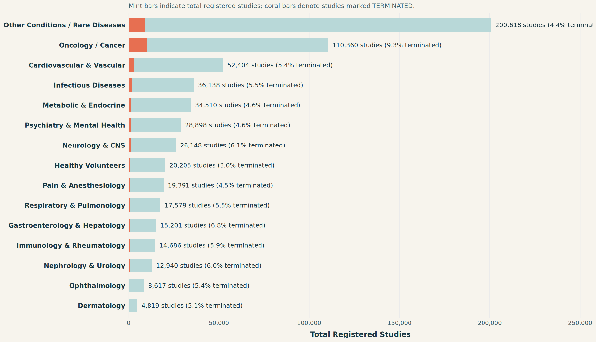
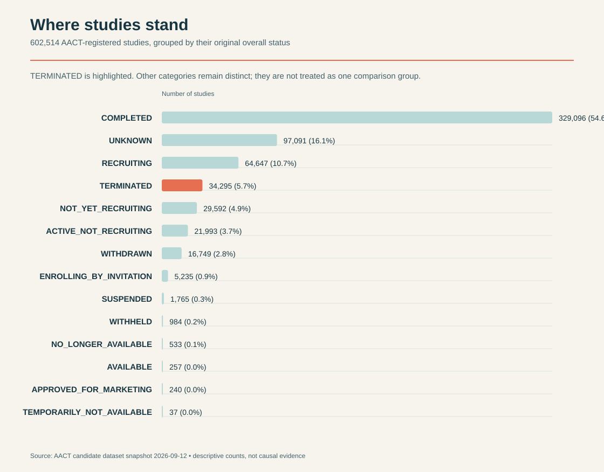
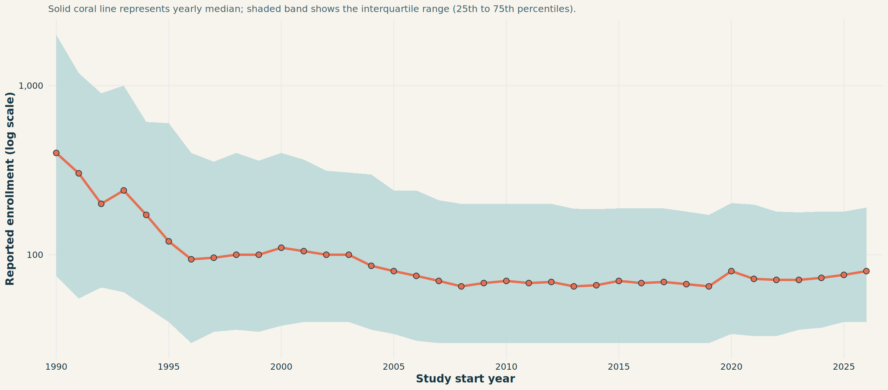

Where studies stand

This foundational view captures all 602,514 registered clinical studies in the Aggregate Analysis of ClinicalTrials.gov (AACT) candidate dataset, maintaining each reported status category independently.
A central finding immediately emerges: 34,295 studies were explicitly marked TERMINATED (representing 5.7% of all registered trials, and 9.4% of closed completed or terminated trials). Rather than treating trial termination as a rare anomaly, the data reveals that premature study termination is a recurring challenge across the clinical research enterprise.
NoteKey Takeaway from Status Distribution
While completed studies represent the largest single group (329,096 trials), over 34,000 trials halted prematurely. Understanding the operational, design, and clinical factors associated with these terminations provides a blueprint for early detection and prevention.
Key Variables & Data Dimensions Gathered
To evaluate termination risk factors comprehensively, we gathered and synthesized multidimensional indicators across 602,514 studies:
<div class="metric-number">602,514</div>
<div class="metric-label">Total Studies</div>
<div class="metric-sub">Complete AACT spine analyzed</div><div class="metric-number">34,295</div>
<div class="metric-label">Terminated Trials</div>
<div class="metric-sub">5.7% of total; 9.4% of resolved trials</div><div class="metric-number">459,840</div>
<div class="metric-label">Interventional Trials</div>
<div class="metric-sub">vs 140,623 observational studies</div><div class="metric-number">30,742</div>
<div class="metric-label">Reported Reasons</div>
<div class="metric-sub">Documented causes of premature halts</div>Variables Collected Across Clinical Dimensions
| Domain | Key Variables Gathered | Description & Analytical Value |
|---|---|---|
| Study Identification & Status | nct_id, overall_status, terminated_binary, why_stopped |
Tracks trial status across 14 categories and captures free-text stopping rationales for over 30,000 terminated studies. |
| Recruitment & Scale | enrollment, enrollment_type |
Quantifies planned and actual participant cohorts, distinguishing between anticipated targets and actual accrual. |
| Development Phase | phase (Phase I, II, III, IV, Mixed, NA) |
Evaluates how failure rates evolve from early safety testing to large-scale confirmatory trials. |
| Sponsorship & Funding | lead_sponsor_type, lead_sponsor_organization, sponsor_count |
Categorizes sponsors into Industry, Academic/Hospital, NIH, and Federal agencies to assess funding stability. |
| Study Architecture & Complexity | randomized_vs_nonrandomized, placebo_used, number_of_arms, number_of_sites |
Captures structural protocol complexity, including blinding, control arms, and global facility footprints. |
| Timeline & Duration | start_year, study_start_date, study_completion_date, study_duration_days |
Tracks temporal evolution over 36 years (1990–2026) and measures elapsed trial duration before resolution. |
Therapeutic Areas & Disease Distribution
Clinical trial volume and termination vulnerability vary widely across medical disciplines. The statistics chart below maps registered trials and termination rates across major therapeutic areas:
NoteTherapeutic Area Insights
- Oncology Dominance & Risk: Oncology / Cancer represents the largest identified clinical indication with 110,360 studies (18.3% of all trials), and simultaneously exhibits the highest termination rate at 9.3% (over 10,200 terminated trials). Oncology trials face severe patient accrual hurdles due to narrow biomarker inclusion criteria and toxicities.
- Healthy Volunteer Baseline: Studies on healthy volunteers and normal controls display the lowest termination rate (3.0%), underscoring that patient disease severity and complex eligibility directly elevate termination hazard.
Are trials getting larger? Trial enrollment over time
A critical question when predicting trial feasibility is whether clinical trials have grown in scale over the decades. The two coordinated visualizations below combine the longitudinal trajectory of planned enrollment with an interactive panel of histograms illustrating how trial sizes are distributed across eras.
1. Longitudinal Enrollment Trajectory (1990–2026)
This view tracks median planned enrollment (solid coral line) and the middle 50% interquartile band (shaded mint band) on a logarithmic scale for 575,628 trials with positive reported enrollment.

2. Interactive Panel of Histograms: Enrollment Distribution by Era
The histogram panel below details the distribution of participant enrollment across four distinct historical eras: 1990–1999, 2000–2009, 2010–2019, and 2020–2026. Hover over any bar to inspect the exact share and number of trials within that enrollment bin, or click eras in the legend to compare subsets.
NoteKey Insights from Enrollment Distribution
- Convergence on Modern Target Sizes: In the 1990s (prior to mandated registry reporting), recorded trials were disproportionately large landmark trials. Since the mid-2000s, clinical research has settled into a consistent distribution, with the bulk of trials enrolling between 25 and 250 participants (typical Phase I–II studies).
- The Long Tail of Mega-Trials: While median trial size has remained relatively stable (~60–80 patients), roughly 10% of trials plan for 1,000+ participants, introducing dramatic operational complexity and multi-site coordination risks.
Important Note
Correlation does NOT equal causation. Instead, data related to the risk factors for the termination of drug trials are merely associated with drug trial failure. Identifying these statistical associations allows research teams to flag operational vulnerabilities and implement risk-mitigation strategies early in trial planning.